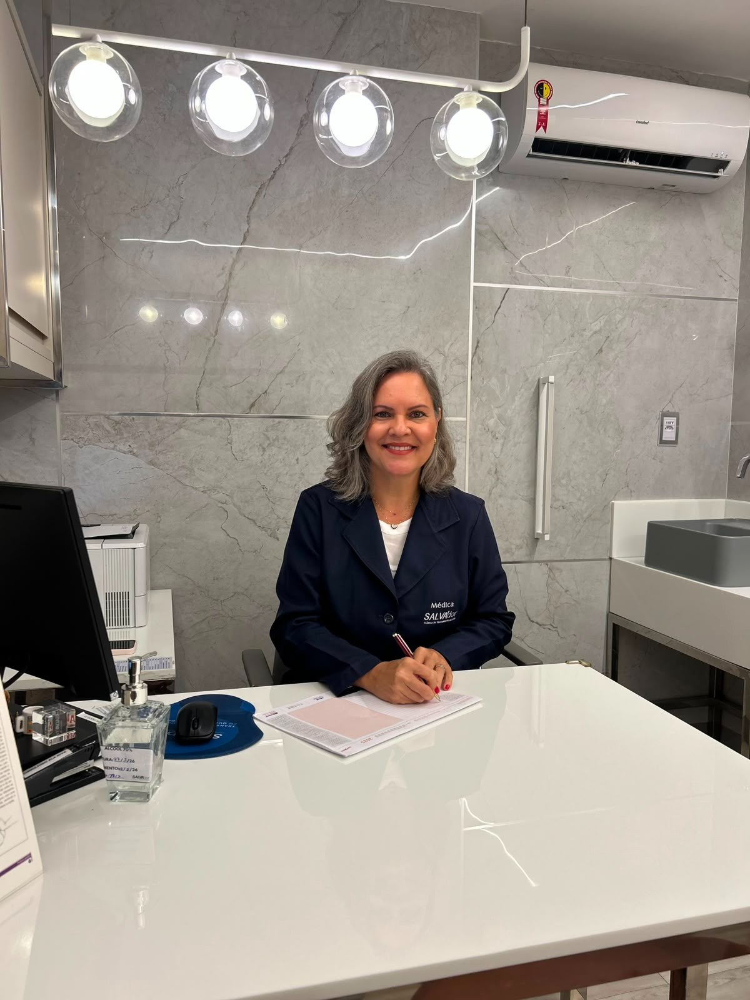
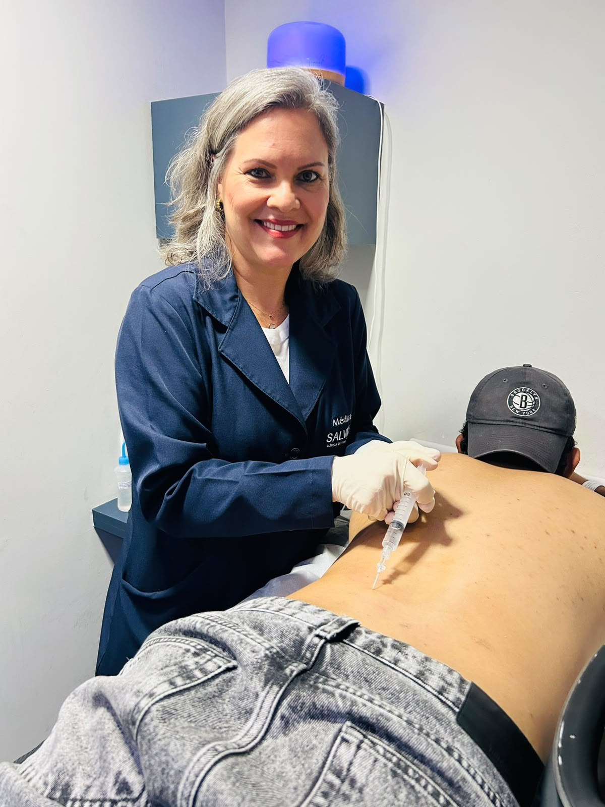
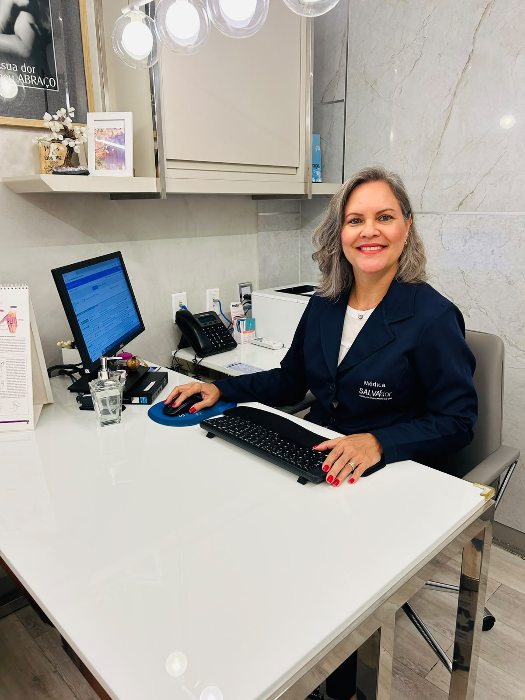
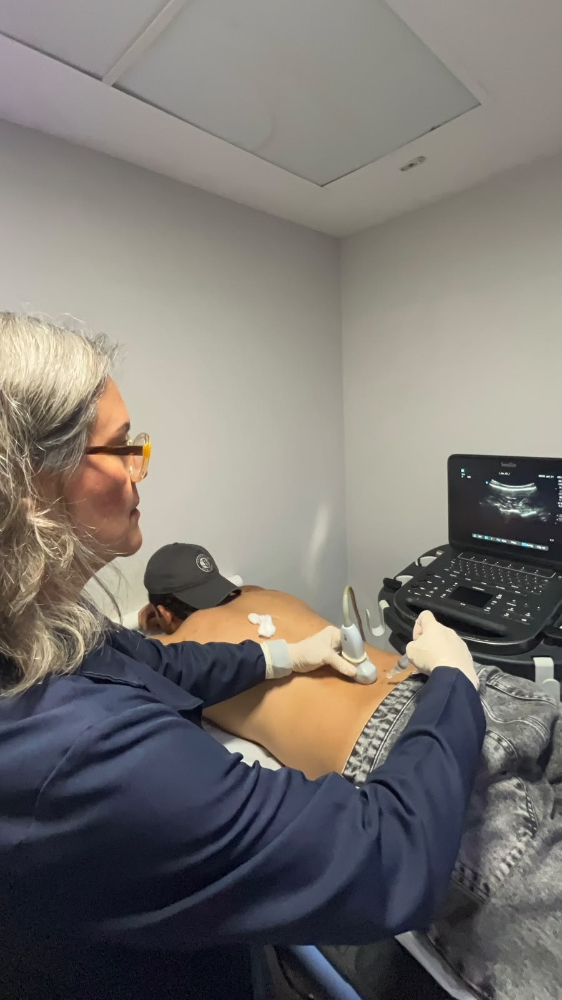
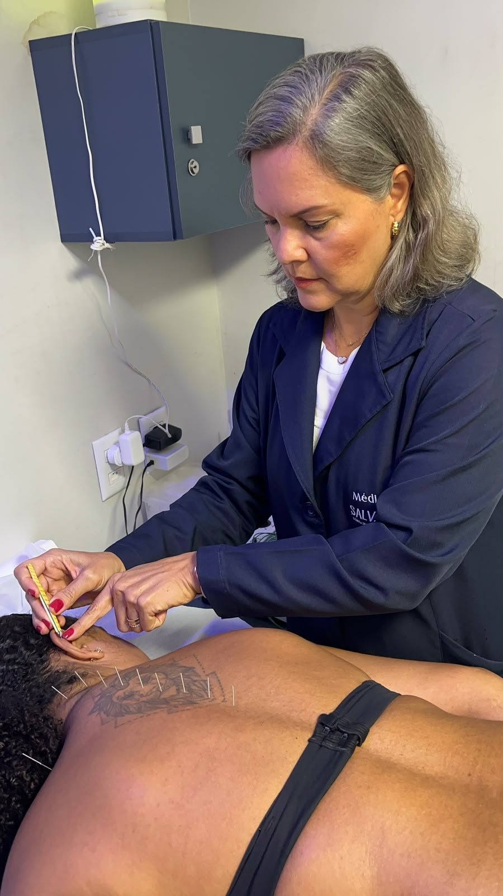

Acupuntura- Dor - Ortopedia - Traumatologia
Cuidado que escuta a dor antes de tratá-la.
Eu me chamo Roberta Moitinho e uno a precisão das técnicas integrativas para devolver movimento e qualidade de vida, com acolhimento em cada consulta.
- CRM 14622
- RQE Ortopedia 12328
- RQE Dor 15647
- RQE Acupuntura 17681


Sobre a especialista
Roberta Moitinho
Médica Ortopedista e Traumatologista · Especialista em Dor e Acupuntura
Formada em Medicina e especializada em Ortopedia e Traumatologia, a Dra. Roberta dedica sua prática ao tratamento da dor sob um olhar amplo — unindo procedimentos ortopédicos convencionais a técnicas integrativas como acupuntura, auriculoterapia e agulhamento a seco.
Seu trabalho parte de um princípio conplexos e entender a origem da dor para cuidar da causa, não apenas do sintoma, em consultas pensadas para acolher cada paciente com atenção e clareza.
- CRM
- 14622
- Ortopedia e Traumatologia
- RQE 12328
- Dor
- RQE 15647
- Acupuntura
- RQE 17681
No dia a dia da clínica
Uma rotina dedicada ao alívio da dor



Tratamentos
Procedimentos e terapias
Clique em um procedimento para saber mais.
Onde encontrar me encontrar
Locais de atendimento
CTD — Clínica de Terapia da Dor
Unidade Salvador Trade Center
- Segunda-feiraManhã
- Terça-feiraManhã
Clínica Salva'dor
Unidade Garibaldi
- Segunda-feiraTarde
- Terça-feiraTarde
- Sexta-feiraManhã WhatsApp
Clínica VitaDor
Unidade Pituba
- Quinta-feiraManhã WhatsApp
Quem já passou por aqui
Avaliações e elogios
Deixe seu depoimento
Vamos cuidar da sua dor juntos?
Fale com a equipe da Dra. Roberta e agende sua consulta na unidade mais próxima de você.